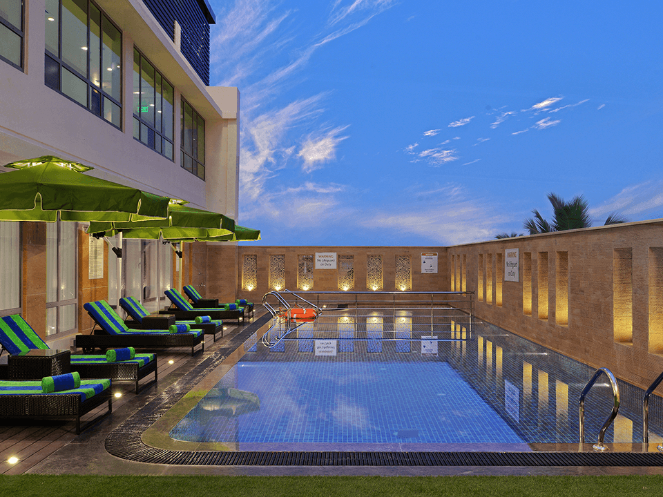

Cost and Rules
Per night:Rs.8550+Rs.1539(taxes and fees)
Pets are not allowed.
Smoking within the premises is not allowed
Overview
Hotel 6 is a great choice for travellers looking for a 5 star star hotel.This Hotel stands out as one of the highly
recommended hotel.From all the 5 Star hotels,Hotel 6 is very much popular among the tourists. A smooth
check-in/check-out process, flexible policies and friendly management garner great customer satisfaction for this
property. The Hotel has standard Check-In time as 02:00 PM and Check-Out time as 12:00 PM.
What our guests think
- Courteous staff
- Beautiful experience
- Nice room
- Great place
- Delicious food
are some highly appreciated and talked about aspects of the Hotel 6.The property is rated very good by 60% of the
guests, 32% have rated it good, 3% have rated it average, 4% have rated it bad.Safety And Hygiene is the top priority
for Hotel 6 with score 98%. 100% Guests like the Thermal Screening feature. Staff Hygiene feature is liked by
100% users.Hotel 6 provides a top class Service Quality as 100% of guests liked it. Overall Food of Hotel 6 is
liked by the 100% guests. Hotel 6's Amenities are liked by the 100% of guests. Restaurant is liked by the 100%
guests. Also 100% of guests said that Television was working in their rooms.